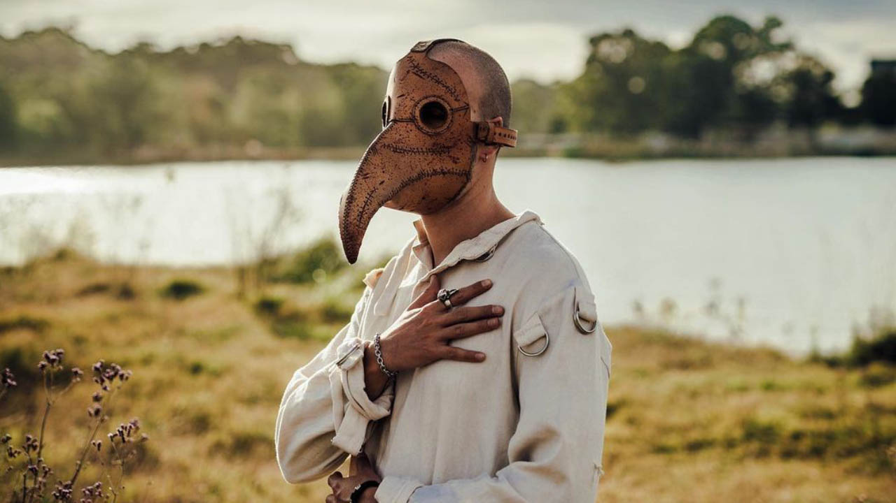
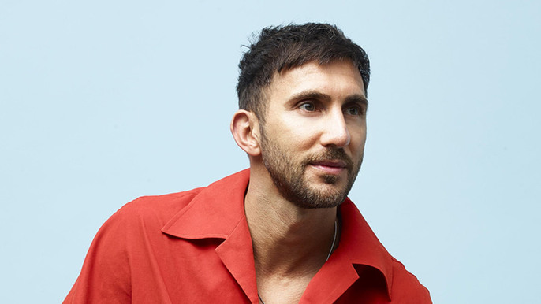
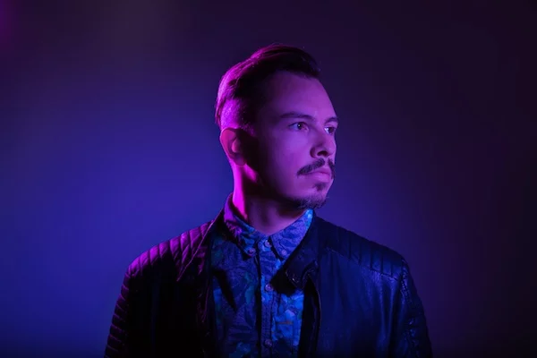

INFORMACIÓN
Hozho
Joel Monteiro, también conocido como Hozho, es un productor y DJ de origen portugues, que capturo al mundo y creo que una gran base de fans con su estilo Melodark. Este Domingo 3 de Septiembre se estará presentando en Punta Carrasco en el Rio Electronic Music para luego continuar su viaje a EEUU con motivo de su tour por ese país.
Hot Since '82
Daley Padley, conocido en la escena como Hot Since ‘82, es un productor y DJ británico de musica House. Hot Since ‘82 visitara Argentina en un tour por 3 ciudades del país. Con un show en Rosario el día Viernes 22 de Septiembre y con una doble presentación en las ciudades de Córdoba y Buenos Aires el Sábado 23 de Septiembre.
Camelphat

Dave Whelan y Mike Di Scala, son DJ y productores que conforman el dúo, Camelphat. Mundialmente conocidos por su éxito “Cola” lanzado en 2017 bajo el sello de Defected Records. El dúo se presentará en Buenos Aires, en un evento que tendrá lugar el próximo 7 de octubre, desde las 18:00 hasta la medianoche, prometiendo una tarde noche llena de ritmo y emoción.
Purple Disco Machine
Tino Piontek, más conocido por su alias Purple Disco Machine, es un productor y DJ aléman, mundialmente conocido por su éxito del 2020 “Hipnotized”. Se estará presentando en la Ciudad de Buenos Aires en el Madero Boardwalk el Sábado 14 de Octubre en el evento de 2GTHR que comenzara a partir de las 23 horas.
Korolova

Olga Korolova, o tambíen simplemente conocida por Korolova es una DJ ucraniana, que se caracteriza por su Meloc Techno y Progressive House. El 7 de Diciembre se estará presentando en el Madero Boardwalk de Buenos Aires en un evento de 2GTHR llamado “Korolva & Friends” que iniciará a las 23 horas.
Boris Brejcha

Boris Brejcha, es un DJ y productor alemán, conocido por ser uno de los exponentes más importantes del Minimal Techno. Y creador de lo que el autodenomina “High-Tech Minimal. Boris regresa a la Argentina, con un show el 8 de Diciembre junto a otros artistas internacionales como la DJ y Productora Ann Clue y DJ Moritz Hofbauer.